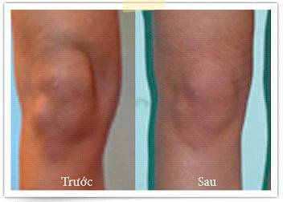

Thuốc Việt Nam 2019
Dịch vụ y tế
Vào ngày , một sự kiện quan trọng đã diễn ra tại Hội nghị của các bác sĩ thấp khớp trên toàn thế giới. Cả hội trường đã đứng vỗ tay trong 10 phút để chúc mừng chàng trai trẻ trên sân khấu. Đó là Bác sĩ trẻ việt nam Nguyễn Thành Vũ, người đã báo cáo về phát minh của mình - một phương pháp độc đáo giúp phục hồi hoàn toàn các khớp đau.
Trong nhiều năm, Nguyễn Thành Vũ cùng với một nhóm các nhà khoa học đã tham gia thực hiện hóa ý tưởng tuyệt vời của mình. Các chuyên gia của Đại học Y tại Việt Nam, Hiệp hội các bác sĩ thấp khớp, Trung tâm nghiên cứu sức khỏe (CPHS) và một số chuyên gia khác đã tham gia phát triển loại thuốc này. Bây giờ ai cũng thấy được rằng ý tưởng này đã trở thành hiện thực và bắt đầu mang lại những kết quả tuyệt vời.
Phóng viên: Chào Thành Vũ, anh là một trong những bác sĩ trẻ và thành công nhất trên thế giới.. Tại sao bạn lại quyết định cống hiến bản thân mình để giải quyết vấn đề xương khớp?
Mình không thực sự muốn nói điều này cho công chúng, động lực của mình chỉ mang tính cá nhân. Vài năm trước, mẹ tôi qua đời vì nhiễm trùng máu do các mô khớp bị hủy hoại. Mẹ thì lúc nào trông cũng xinh đẹp, không có dấu hiệu gì là mẹ bị ốm và chỉ thỉnh thoảng mẹ mới than phiền rằng mình bị đau khớp. Dần dần mẹ thấy đau hơn và các bác sĩ chuyển mẹ đi Hà Nội điều trị. Không có gì báo trước điềm gở cả, nhưng do các bác sĩ máu lạnh và điều trị không đúng cách mà mẹ bị nhiễm trùng máu. Họ không cứu được mẹ và gia đình tôi vắng bóng mẹ đã vài năm rồi. Điều đáng buồn nhất là trước đó bà tôi cũng mất chính vì lý do đó. Sau những sự kiện đáng buồn này, tôi đã tự hứa với bản thân rằng mình sẽ trở thành một nhà khoa học và cống hiến hết mình để tìm giải pháp cho bệnh khớp. Mình nhớ rằng mình đã bị sốc khi lần đầu tiên nhận ra rằng tất cả các loại thuốc và kem bôi hiện đại ở các hiệu thuốc đều chứa hóa chất độc hại gây tác dụng phụ tiêu cực cho các khớp đau và phá hủy gan. Và chính chúng là những loại thuốc mà mẹ mình đã dùng để điều trị mỗi ngày.
Cho nên là trong ba năm qua tôi đã dành toàn bộ thời gian để nghiên cứu vấn đề này. Phương pháp mới để điều trị khớp mà mình phát triển và hiện tại đang được mọi người nói đến đã xuất hiện trong lúc viết luận văn. Tất nhiên, tôi cũng biết rằng mình đã thành công trong việc tìm ra một dược phẩm trị liệu mới, nhưng hoàn toàn không ngờ rằng nó sẽ tạo được sự quan tâm đến như vậy trên toàn thế giới.
Phóng viên: Chúng tôi nhận được thông tin về sự quan tâm to lớn từ phía các công ty dược phẩm quốc tế đến phát minh của bạn. Họ đã đề nghị mua lại phát minh của bạn phải không?"
Ngay khi các ấn phẩm về kết quả thử nghiệm lâm sàng xuất hiện, ngay lập tức mình bắt đầu nhận được những đề nghị bán bản quyền cho phát minh của mình. Ban đầu, mình được một tập đoàn của Pháp ngỏ lời mua với giá 120 nghìn euro. Sau đó, một công ty dược phẩm của Mỹ đã đề nghị mua với giá 35 triệu đô. Bây giờ tôi thường xuyên nhận được những lời đề nghị bán lại phát minh của mình như thế, và thậm chí mình đã phải đổi số điện thoại. Mình cũng đã ngừng sử dụng mạng xã hội.
Phóng viên: Tại sao bạn lại không muốn bán lại phát minh của mình? Nghe những lời ngỏ kia có vẻ thực sự quá hấp dẫn mà đúng không?
Có lẽ nghe thì lạ, nhưng mình tạo ra phương thuốc này không nhằm mục tiêu là để bán. Điều gì sẽ xảy ra nếu một công ty dược quốc tế mua được nó? Họ sẽ ngay lập tức tăng giá thuốc lên vài chục lần. Và với giá như vậy, người dân sẽ không thể mua nổi thuốc này. Một trong những bác sĩ nước ngoài đã nói với mình rằng phương thuốc thế này phải có giá ít nhất cũng $3000. Thử nghĩ xem, ở Việt Nam ta có bao nhiêu người có thể mua được? Trong khi mình thì muốn phương thuốc này phải vừa túi tiền của mọi người.
Đó là lý do tại sao mình đã đồng ý ngay lập tức khi nhận được đề nghị tham gia vào việc tiếp tục nghiên cứu và phát triển phương thuốc quốc gia. Hiện tại mình làm việc với các chuyên gia giỏi nhất từ Đại học Y khoa Tokyo Việt Nam, Hiệp hội các bác sĩ thấp khớp, Trung tâm nghiên cứu sức khỏe (CPHS). Đối với mình, đây là một kinh nghiệm hữu ích. Hiện nay phương thuốc đã vượt qua các thử nghiệm và kiểm tra lâm sàng, nhận được tất cả các chứng chỉ và xác nhận. Điều quan trọng hơn hết là mọi người có thể tự do mua thuốc với giá cả phải chăng, không đắt đỏ.
Chúng tôi cũng đã gặp mặt một chuyên gia về việc thực hiện chương trình quốc gia nhằm phát triển phương thuốc này, giáo sư Đại học Y khoa Tokyo Việt Nam, bác sĩ chuyên khoa thấp khớp, phó giám đốc Viện thấp khớp và Giám đốc Hiệp hội học viện y khoa Ngô Vĩnh Trung, và xin ông bình luận và cung cấp thông tin về kế hoạch phát triển loại thuốc mới này.
Phóng viên: Giáo sư Ngô Vĩnh Trung, hãy vui lòng cho biết, điểm mới lạ trong phương pháp của Thành Vũ là gì và có thực sự nó là sản phẩm tốt nhất để điều trị bệnh khớp trên thế giới không ạ?
Vâng, cho đến hôm nay, đây thực sự là sản phẩm tốt nhất và một phương pháp hoàn toàn mới trong điều trị bệnh khớp. Các loại thuốc cũ hoạt động ra sao? Không hiệu quả, không có chọn lọc và có tác dụng phụ độc hại. Đó là ngõ cụt, bởi vì các loại thuốc cũ chỉ giúp giảm đau chứ không thể khôi phục sụn khớp. Chỉ giải quyết hậu quả mà không phải với nguyên nhân bệnh, những loại thuốc này không chữa trị mà chỉ làm tình trạng bệnh nhân thêm nặng. Phát minh mới HONDROCREAM khởi động quá trình phục hồi mô sụn ở cấp độ tế bào, nhờ đó ngăn các khớp bị hủy hoại và loại bỏ nguồn gốc nhiễm trùng. Máu tham gia vào việc tái tạo sụn khi không bị nhiễm trùng và có thể tương tác trực tiếp với các mô xương. Phương thuốc giúp loại bỏ sự thiếu hụt dịch bao hoạt dịch và do đó khôi phục chức năng khớp, tăng tính linh hoạt của chúng. Có thể nói rằng, nhờ có HONDROCREAM cũng như nỗ lực của một số lượng lớn các bác sĩ và chuyên gia, chúng ta đã có thể tạo ra một phương thuốc hiệu quả thế hệ mới, giúp điều trị khớp ở mọi tình trạng và mọi lứa tuổi.
Phóng viên: Vì sao các bệnh về khớp lại nguy hiểm đến vậy ạ?
Hãy xem qua thống kê y tế và tỷ lệ tử vong ở Việt Nam. Hơn 350 000 người chỉ có thể di chuyển bằng xe lăn. Khoảng 100 000 trong số đó hoàn toàn bất động. Gần 150.000 người đã chết vì nhiễm trùng máu do khớp và mô xung quanh mô khớp bị hủy hoại. Đau khớp không đơn giản chỉ đau và tàn tật, mà còn là nguồn lây nhiễm trong cơ thể, gây nhiễm trùng máu. Nó lây lan khắp cơ thể, làm ảnh hưởng xấu đến tất cả các cơ quan. Có phải có nghĩa là bất cứ ai bị đau khớp đều gặp nguy hiểm không? Khả năng cao là có. Bất cứ lúc nào cũng có thể xảy ra ngừng tim, xuất huyết não, ung thư gan và suy thận. Như các bạn thấy, không có bệnh nhân nào là an toàn cả.
Phóng viên: Nhưng mà có nhiều loại thuốc giúp khôi phục khớp lắm đúng không ạ?
Đúng, tồn tại một số lượng lớn các loại thuốc này, nhưng chúng đều hoạt động theo một nguyên tắc chung mới được nhắc đến ở đầu buổi phỏng vấn. Chúng chỉ có tác dụng tức thời và giúp người ta hết đau chỉ trong thời gian ngắn. Thông thường, các loại thuốc này còn gây hại nhiều hơn là chữa bệnh. Chẳng thể nào chữa lành bệnh với chúng với giá 590 000 ĐỒNG được. Thành Vũ hoàn toàn đúng. Nếu các bạn xem thử người ta bày bán gì ở hiệu thuốc và lắng nghe những chuyên gia độc lập thì các bạn sẽ hiểu rằng đa số các loại thuốc đều chỉ là cách thức để rút tiền từ túi người bệnh mà thôi.
Phóng viên: Nhưng mà HONDROCREAM cũng được bán tại các hiệu thuốc đúng không ạ?
Hãy xem Thành Vũ kìa. Chỉ khi bạn ấy vừa tạo được một phương thuốc cách mạng thì ngay lập tức các công ty dược trên toàn thế giới xếp hàng chờ mua lại bản quyền sản phẩm. Rất tiếc là họ cần nó không phải để bán mà ngược lại là để không bán. Bởi vì họ muốn người ta không chữa khỏi bệnh và tiếp tục đau ốm, tiếp tục mua các loại thuốc vô tác dụng của họ. Điều này đặc biệt đúng đối với việc điều trị khớp – đây là một mỏ vàng thực sự trên thị trường dược phẩm. Chỉ riêng tại Hoa Kỳ, những loại thuốc này được bán với doanh thu hàng tỷ đô. Sản phẩm của chúng ta có thể làm tình hình thay đổi đáng kể trên thị trường. Giờ thì chẳng ai phải tốn tiền hàng tháng cho những loại thuốc cũ và vô ích khi đã có HONDROCREAM cho phép quên đi vấn đề xương khớp vĩnh viễn.
Có lẽ là chúng tôi sẽ không thể hợp tác với các hiệu thuốc được. Các hiệu thuốc là đối tác của các công ty dược phẩm và họ hoạt động như một đội. Họ không muốn nghe về chúng tôi và về phương thuốc mới của chúng tôi, mặc dù thực tế đây là sản phẩm duy nhất chính thức được chứng nhận và là phương thuốc cho kết quả cao nhất trong điều trị và phục hồi chức năng khớp.
Phóng viên: Nhưng nếu sản phẩm không được bán tại hiệu thuốc thì có thể mua nó ở đâu ạ?
Chúng tôi đã quyết định tổ chức phân phối HONDROCREAM trực tiếp không qua hiệu thuốc và các bên trung gian. Trong tất cả các phương án, chúng tôi đã chọn: bất kỳ ai có nhu cầu đều có thể liên hệ với nhà thuốc trực tuyến №1 và để lại yêu cầu mua hàng. Sau đó, chuyên viên tư vấn sẽ liên lạc với họ và chia sẻ chi tiết hơn về sản phẩm. Sau khi xác nhận, sản phẩm được gửi đến khách hàng qua đường bưu điện. Ngày , hiệu thuốc trực tuyến đã được thành lập và đã đi vào hoạt động.
Trong khoảng thời gian từ ngày đến ngày , chúng tôi thực hiện chương trình khuyến mãi và có thể đặt hàng với mức giảm giá khủng. Đây là chương trình hợp tác của chúng tôi nhằm thu hút sự chú ý của mọi người đối với sản phẩm. Chúng tôi hy vọng rằng hiệu ứng truyền miệng sẽ có tác dụng và mỗi người chữa lành bệnh sẽ giới thiệu nó cho bạn bè của mình.
Phóng viên: Thế giá thành HONDROCREAM chưa giảm giá là bao nhiêu ạ?
Giá sản xuất là khoảng 1180000 đồng mỗi hộp. Chúng tôi đã thỏa thuận thành công với ban quản lý Hội các bác sĩ thấp khớp về việc giảm giá 50% cho người tiêu dùng. May mắn là những người giải quyết vấn đề này hiểu được tầm quan trọng của việc sản phẩm phải vừa túi tiền cho toàn thể người dân chứ không chỉ với một số người nhất định. Chúng tôi cam kết không bán công thức ra nước ngoài và không xuất khẩu sản phẩm. Chỉ cho Việt Nam thôi.

Đã nhiều năm tôi bị đau gối cho đến khi tôi biết đến phương thuốc này! Đã dùng được một tháng và tôi hiện tại tràn đầy năng lượng, cứ như thể trẻ ra 10 tuổi vậy. Thật sự không hiểu tôi đã mua toàn đồ dỏm trong hiệu thuốc làm gì.
Tôi vừa thấy chương trình giảm giá và đã quyết định mua cho mẹ và hy vọng là thuốc sẽ có tác dụng với mẹ tôi. Tôi đã mua được HONDROCREAM với mức giá khuyến mãi chỉ 590 000 ĐỒNG!
Tôi cũng đã nhận bưu kiện ở bưu điện giá 590 000 ĐỒNG. Tôi thích việc mình chỉ phải thanh toán sau khi nhận và kiểm hàng.
Tôi tình cờ đọc được về sản phẩm này trên Tạp chí nghiên cứu y học. Bài viết dưới dạng “ý kiến chuyên gia” của một bác sĩ thấp khớp nổi tiếng. Khi mới bắt đầu sử dụng, tôi hiểu được ngay đây là một sản phẩm tốt và đáng giá tiền.
HONDROCREAM thực sự là một sản phẩm hiệu quả! Tôi đã đặt mua một hộp để thử khi không thể chịu nỗi cơn đau nữa. Sau vài ngày sử dụng, cơn đau biến mất hẳn! 
Tôi cũng đã mua HONDROCREAM để thử. Họ nói là trong vòng hai ngày sẽ chuyển đến.
Tôi mới nhận được hàng. Nhanh thật, mới đặt hôm qua thôi.
Bệnh viện kinh dễ sợ. Lâu lắm rồi không tới đó vì vô ích thôi. Tốn tiền mà không có hiệu quả gì. Tôi rất lấy lòng cảm tạ em Thành Vũ đã tạo ra phương thuốc này. Nó có tác dụng nhanh chóng thực sự và giá rẻ.
Đọc qua bình luận, tôi hiểu được rằng tôi cũng cần phương thuốc này. Đã để lại yêu cầu mua hàng và giờ đang đợi kiện hàng của mình đến.
Vợ chồng tôi đã bắt đầu điều trị với phương thuốc thần kỳ này, và giờ đây cảm thấy tốt hơn hẳn. Chẳng khó khăn gì, không đắt tiền và cũng không lâu nữa. Tiếc là trước đây không biết đến nó.